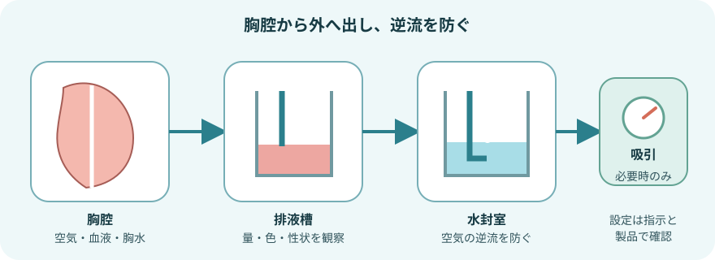
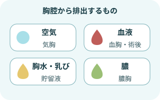
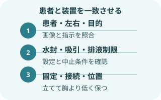
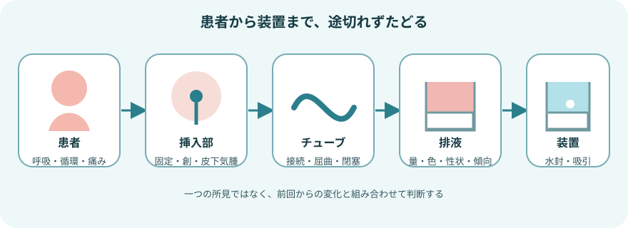
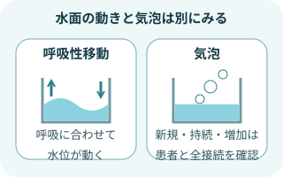
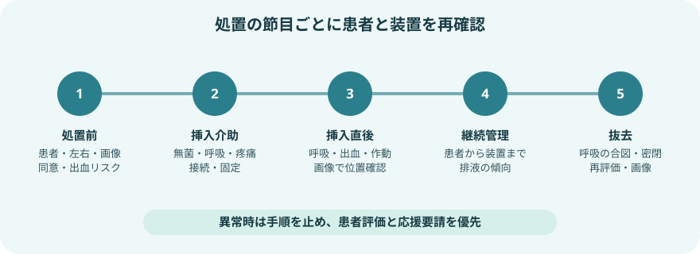
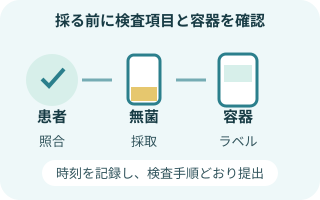
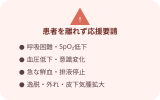

胸腔ドレーンの安全原則

- 装置は立てたまま、挿入部より低い位置に保つ。
- 接続の緩み、屈曲、圧迫、ベッド柵への挟み込み、深い垂れ下がりをなくす。
- 吸引圧を自己判断で変更せず、水封水や吸引室は製品の目盛・添付文書で確認する。
- ルーチンのクランプや強いミルキング・ストリッピングは行わない。
- 排液だけで判断せず、呼吸・循環・疼痛と装置全体を同時にみる。
目的と主な適応

胸腔内から空気・液体を排出する
- 気胸：空気を排出し、肺の再膨張を助ける
- 血胸：血液を排出し、量と性状を観察する
- 胸水・乳び胸：貯留液を排出し、呼吸を助ける
- 膿胸：感染した胸水・膿を排出する
- 胸部手術後：空気、血液、リンパ液などを排出する
大量の胸水を急速に排出すると、低血圧、呼吸状態悪化、再膨張性肺水腫につながることがある。排液量・速度・中止条件を指示で確認する。
管理を始める前の確認

患者・指示・装置を一致させる
- 目的、挿入側、挿入部位、挿入長の目印
- 水封のみか持続吸引か、設定圧はいくつか
- 排液量・速度の上限、中止・報告基準
- クランプ、移動、離床、検査時の扱い
- 挿入後・抜去後の画像確認と採血
- 使用製品の水封水、吸引表示、アラームの見方
観察は「患者→挿入部→管→装置」の順

- 患者
呼吸数・呼吸様式、左右の胸郭運動、呼吸音、SpO₂、脈拍、血圧、意識、疼痛、苦しさを確認する。
- 挿入部
固定、挿入長、出血、浸出液、発赤、熱感、疼痛、ドレッシング、皮下気腫を確認する。
- チューブと接続
抜け、緩み、亀裂、屈曲、圧迫、凝血塊、深い垂れ下がりがないかたどる。
- 排液
量、色、性状、凝血塊、増減の傾向を確認し、装置の目盛へ時刻と量を記す。
- 水封・吸引
呼吸性移動、気泡、吸引表示、装置の傾き、水位、アラームを製品の方法で確認する。
呼吸性移動とエアリークの読み方

単独の所見では決めつけない
- 呼吸性移動あり：胸腔内圧の変化が水封室へ伝わっている
- 呼吸性移動なし：肺の再膨張後だけでなく、屈曲・閉塞・クランプでも起こる
- 咳で一時的な気泡：患者側のエアリークでみられることがある
- 新しい持続性気泡：患者側または接続・装置側の漏れを疑う
排液と皮下気腫
- 量：一定時間ごとの差と累積量を記録する。急増・急減・突然の停止を患者状態と合わせて評価する。
- 色：淡血性から漿液性への変化、鮮血化、混濁、膿性、乳白色などを観察する。
- 突然の鮮血・増加：出血を疑い、バイタルサインと排液速度を確認して直ちに報告する。
- 突然の停止：改善とは限らない。屈曲、圧迫、凝血塊、位置異常と呼吸悪化を確認する。
- 皮下気腫：挿入部周囲、胸部、頸部を視診・触診し、範囲の拡大、声の変化、呼吸困難を確認する。
皮下気腫の範囲を皮膚へ記す運用がある場合は、日時を添え、院内手順に従う。頸部へ広がる、急速に増える、呼吸や発声に影響する場合は緊急報告する。
体位・移動・日常生活
- 呼吸しやすい体位を整え、挿入側を下にするなど一律の体位に固定しない。
- 体位変換ごとに、チューブの牽引・屈曲・身体の下への巻き込みを確認する。
- 歩行時も装置を立てて胸より低く持ち、床へ直置きしない。
- 移動前に接続、固定、電源・吸引、クランプの要否を確認し、移動後に再確認する。
- 咳嗽・深呼吸・離床は、疼痛を調整しながら患者の状態と指示に合わせる。
挿入介助

- 適応・同意・左右を確認する
患者、目的、画像、処置部位、抗凝固薬、アレルギー、検査値、同意を確認し、タイムアウトを行う。
- 監視と物品を準備する
酸素、吸引、モニター、救急物品、局所麻酔、無菌物品、ドレーン、使用する排液装置を準備する。
- 体位を整え無菌操作を介助する
呼吸状態を連続観察し、疼痛と不安へ声をかける。胸水などでは超音波による部位確認を介助する。
- 接続・固定・作動を確認する
無菌的に装置へ接続し、挿入長、縫合・固定、ドレッシング、水封、吸引設定を確認する。
- 処置後を観察し記録する
呼吸、循環、疼痛、出血、排液、エアリーク、皮下気腫を確認し、指示された胸部画像で位置を確認する。
抜去介助
- 抜去条件と指示を確認する
呼吸状態、画像、排液量、エアリーク、抗凝固薬、抜去後の画像・観察指示を確認する。
- 患者へ説明し物品を準備する
体位、痛み、呼吸の合図を説明し、モニター、被覆材、抜糸・縫合物品を準備する。
- 呼吸の合図を介助する
息止めやバルサルバ法など、実施者が選んだ方法を患者と合わせる。吸気・呼気のどちらかを一律に覚えない。
- 抜去直後に密閉する
実施者の抜去と同時に創部を速やかに閉鎖・被覆し、空気の流入と漏れを防ぐ。
- 呼吸状態と創部を再評価する
呼吸困難、SpO₂、左右の呼吸音、疼痛、出血、皮下気腫を確認し、指示された画像と記録を行う。
胸腔穿刺と検体

検査目的と提出方法を先に確認する
- 診断目的か治療目的か、採取する検査項目を確認
- 患者と穿刺側を照合し、超音波による部位確認を介助
- 治療的排液では上限量・速度・中止症状を確認
- 培養、細胞診、生化学などに合う容器を検査部へ確認
- 採取後すぐに患者情報、検体、時刻を照合して提出
胸水へ一律にヘパリンを加えない。添加剤、採取量、嫌気培養・血液培養ボトルの使用は検査項目と施設の検査手順に従う。
すぐに応援を呼ぶ変化

患者を離れず、ABCDEで評価する
- 突然の強い呼吸困難、SpO₂低下、胸痛、チアノーゼ
- 血圧低下、頻脈、冷汗、意識変化
- 急な鮮血排液・排液増加、または症状を伴う排液停止
- ドレーンの抜去、接続外れ、破損、装置の転倒
- 皮下気腫の急速な拡大、新しい持続性エアリーク
記録と申し送り
- 挿入側・部位、挿入長、固定・ドレッシング、処置後画像
- 呼吸・循環、疼痛、呼吸音、SpO₂、皮下気腫
- 水封・吸引の別、設定値、呼吸性移動、エアリーク
- 排液の時刻、時間量、累積量、色、性状、凝血塊
- 体位・離床、患者への説明、報告内容、指示と対応後の変化